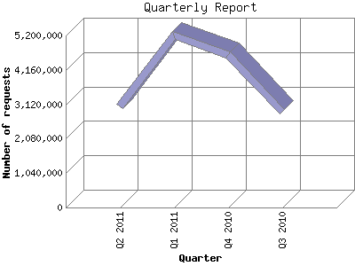

The Quarterly Report shows total activity on your site for each quarter of a
year. Remember that each page hit can result in several server requests as the
images for each page are loaded.
Note: Most likely, the first and
last quarters will not represent a complete quarter's worth of data, resulting
in lower hits.

| Quarter | Number of requests | Number of page requests | |
|---|---|---|---|
| 1. | Q3 2010 | 2,885,728 | 390,910 |
| 2. | Q4 2010 | 4,604,774 | 835,245 |
| 3. | Q1 2011 | 5,189,786 | 947,540 |
| 4. | Q2 2011 | 3,050,592 | 632,410 |
Most active quarter Q1 2011 : 947,540 pages sent. 5,189,786 requests handled.
Quarterly average: 701,526 pages sent. 3,932,720 requests handled.
This report was generated on May 26, 2011 14:03.
Report time frame July 26, 2010 00:00 to May 26, 2011 00:01.
| Web statistics report produced by: analog 6.0 / Report Magic 2.21 |